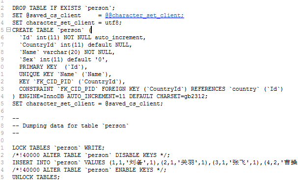

在pom.xml添加调试插件
其中
address=8088是监听端口，这个要和application.properties中的server.port=8088一致。
1 | <build> |
关于调试细节说明可参照https://blog.csdn.net/qq_27093465/article/details/64124330
pom.xml添加调试插件其中
address=8088是监听端口，这个要和application.properties中的server.port=8088一致。
1 | <build> |
关于调试细节说明可参照https://blog.csdn.net/qq_27093465/article/details/64124330
JAVA 的调试方法如下：
1。首先支持 JVM，并设置参数，使之工作在 DEBUG 模式下，加入参数：-Xdebug -Xrunjdwp,transport=dt_socket,server=y,address=5432,suspend=n,onthrow=java.io.IOException,launch=/sbin/echo
其中，-Xdebug 是通知 JVM 工作在 DEBUG 模式下，-Xrunjdwp 是通知 JVM 使用(java debug wire protocol)来运行调试环境。该参数同时了一系列的调试选项：
transport 指定了调试数据的传送方式，dt_socket 是指用 SOCKET 模式，另有 dt_shmem 指用共享内存方式，其中，dt_shmem 只适用于 Windows 平台。
server 参数是指是否支持在 server 模式的 VM 中.
onthrow 指明，当产生该类型的 Exception 时，JVM 就会中断下来，进行调式。该参数可选。
launch 指明，当 JVM 被中断下来时，执行的可执行程序。该参数可选
suspend 指明，是否在调试客户端建立起来后，再执行 JVM。
onuncaught(=y 或 n)指明出现 uncaught exception 后，是否中断 JVM 的执行.
虚拟机参数设置
1．启用调试服务
-Xdebug 启用调试
-Xrunjdwp: 加载 JVM 的 JPDA 参考实现库
2．Xrunjdwp 子参数（sub-options）配置
Xrunjdwp 子参数的配置格式如下
-Xrunjdwp:[=],[=]…
几个例子
-Xrunjdwp:transport=dt_socket,server=y,address=8000
在 8000 端口监听 Socket 连接，挂起 VM 并且不加载运行主函数直到调试请求到达
-Xrunjdwp:transport=dt_shmem,server=y,suspend=n
选择一个可用的共享内存（因为没有指 address）并监听该内存连接，同时加载运行主函数
-Xrunjdwp:transport=dt_socket,address=myhost:8000
连接到 myhost:8000 提供的调试服务（server=n，以调试客户端存在），挂起 VM 并且不加载运行主函数
-Xrunjdwp:transport=dt_shmem,address=mysharedmemory
通过共享内存的方式连接到调试服务，挂起 VM 并且不加载运行主函数
-Xrunjdwp:transport=dt_socket,server=y,address=8000,
onthrow=java.io.IOException,launch=/usr/local/bin/debugstub
等待 java.io.IOException 被抛出，然后挂起 VM 并监听 8000 端口连接，在接到调试请求后以命令/usr/local/bin/debugstub dt_socket myhost:8000 执行
-Xrunjdwp:transport=dt_shmem,server=y,onuncaught=y,launch=d:\bin\debugstub.exe
等待一个 RuntimeException 被抛出，然后挂起 VM 并监听一个可用的共享内存，在接到调试请求后以命令 d:\bin\debugstub.exe dt_shmem
2。启动调试工具。
最简单的调试工具就是上面提到的 JDB，以上述调试用 JVM 为例，可以用下面的命运行启动 JDB：
jdb -connect com.sun.jdi.SocketAttach:port=5432,hostname=192.168.11.213
另外，还有好多的可视化调试工具，如 eclipse,jsawt 等等。Eclipses 可用 ant debug 来建立一个调试方法。
其实就是使用了 JDK 的 JPDA，在启动服务器（Jboss 或者 Tomcat 等）的命令行参数里面加上：
-Xdebug -Xrunjdwp:transport=dt_socket,address=8787,server=y,suspend=n
Java 远程调试
-Xdebug -Xnoagent -Djava.compiler=NONE -Xrunjdwp:transport=dt_socket,server=y,address=3999,suspend=n
-XDebug 启用调试。
-Xnoagent 禁用默认 sun.tools.debug 调试器。
-Djava.compiler=NONE 禁止 JIT 编译器的加载。
-Xrunjdwp 加载 JDWP 的 JPDA 参考执行实例。
transport 用于在调试程序和 VM 使用的进程之间通讯。
dt_socket 套接字传输。
dt_shmem 共享内存传输，仅限于 Windows。
server=y/n VM 是否需要作为调试服务器执行。
address=3999 调试服务器的端口号，客户端用来连接服务器的端口号。
suspend=y/n 是否在调试客户端建立连接之后启动 VM 。
Resin:
RESIN_HOME\bin\httpd.exe -Xdebug -Xrunjdwp:transport=dt_socket,address=5005,server=y,suspend=n
Tomcat:
在 catalina.sh/bat 的最上面加上：SET CATALINA_OPTS=-server -Xdebug -Xnoagent -Djava.compiler=NONE -Xrunjdwp:transport=dt_socket,server=y,suspend=n,address=5005 即可。
Weblogic:
在 startWebLogic.bat 加上：set JAVA_OPTIONS=-Xdebug -Xnoagent -Djava.compiler=NONE -Xrunjdwp:transport=dt_socket,server=y,suspend=n,address=5005
mysqldump 命令将数据库中的数据备份成一个文本文件。表的结构和表中的数据将存储在生成的文本文件中。
mysqldump 命令的工作原理很简单。它先查出需要备份的表的结构，再在文本文件中生成一个 CREATE 语句。然后，将表中的所有记录转换成一条 INSERT 语句。然后通过这些语句，就能够创建表并插入数据。
mysqldump 基本语法：
mysqldump -u username -p dbname table1 table2 …-> BackupName.sql
其中：
使用 root 用户备份 test 数据库下的 person 表
1 | mysqldump -u root -p test person > D:\backup.sql |

其生成的脚本如下：

文件的开头会记录 MySQL 的版本、备份的主机名和数据库名。
文件中以“–”开头的都是 SQL 语言的注释，以”/!40101”等形式开头的是与 MySQL 有关的注释。40101 是 MySQL 数据库的版本号，如果 MySQL 的版本比 1.11 高，则/!40101 和*/之间的内容就被当做 SQL 命令来执行，如果比 4.1.1 低就会被当做注释。
语法：
1 | mysqldump -u username -p --databases dbname2 dbname2 > Backup.sql |
加上了–databases 选项，然后后面跟多个数据库
1 | mysqldump -u root -p --databases test mysql > D:\backup.sql |
mysqldump 命令备份所有数据库的语法如下：
1 | mysqldump -u username -p -all-databases > BackupName.sql |
示例：
1 | mysqldump -u -root -p -all-databases > D:\all.sql |
MySQL 有一种非常简单的备份方法，就是将 MySQL 中的数据库文件直接复制出来。这是最简单，速度最快的方法。
不过在此之前，要先将服务器停止，这样才可以保证在复制期间数据库的数据不会发生变化。如果在复制数据库的过程中还有数据写入，就会造成数据不一致。这种情况在开发环境可以，但是在生产环境中很难允许备份服务器。
注意：这种方法不适用于 InnoDB 存储引擎的表，而对于 MyISAM 存储引擎的表很方便。同时，还原时 MySQL 的版本最好相同。
一看名字就知道是热备份。因此,mysqlhotcopy 支持不停止 MySQL 服务器备份。而且，mysqlhotcopy 的备份方式比 mysqldump 快。mysqlhotcopy 是一个 perl 脚本，主要在 Linux 系统下使用。其使用 LOCK TABLES、FLUSH TABLES 和 cp 来进行快速备份。
原理：先将需要备份的数据库加上一个读锁，然后用 FLUSH TABLES 将内存中的数据写回到硬盘上的数据库，最后，把需要备份的数据库文件复制到目标目录。
命令格式如下：
1 | [root@localhost ~]# mysqlhotcopy [option] dbname1 dbname2 backupDir/ |
常用选项：
mysqlhotcopy 并非 mysql 自带，需要安装 Perl 的数据库接口包；下载地址为:http://dev.mysql.com/downloads/dbi.html
目前，该工具也仅仅能够备份 MyISAM 类型的表。
1、还原使用 mysqldump 命令备份的数据库的语法如下：
1 | mysql -u root -p [dbname] < backup.sq__ |
示例：
1 | mysql -u root -p < C:\backup.sql |
2、还原直接复制目录的备份
通过这种方式还原时，必须保证两个 MySQL 数据库的版本号是相同的。MyISAM 类型的表有效，对于 InnoDB 类型的表不可用，InnoDB 表的表空间不能直接复制。
浅谈使用 springsecurity 中的 BCryptPasswordEncoder 方法对密码进行加密(encode)与密码匹配(matches)
spring security 中的 BCryptPasswordEncoder 方法采用 SHA-256 +随机盐+密钥对密码进行加密。SHA 系列是 Hash 算法，不是加密算法，使用加密算法意味着可以解密（这个与编码/解码一样），但是采用 Hash 处理，其过程是不可逆的。
（1）加密(encode)：注册用户时，使用 SHA-256+随机盐+密钥把用户输入的密码进行 hash 处理，得到密码的 hash 值，然后将其存入数据库中。
（2）密码匹配(matches)：用户登录时，密码匹配阶段并没有进行密码解密（因为密码经过 Hash 处理，是不可逆的），而是使用相同的算法把用户输入的密码进行 hash 处理，得到密码的 hash 值，然后将其与从数据库中查询到的密码 hash 值进行比较。如果两者相同，说明用户输入的密码正确。
这正是为什么处理密码时要用 hash 算法，而不用加密算法。因为这样处理即使数据库泄漏，黑客也很难破解密码（破解密码只能用彩虹表）。
参考文献：点击打开链接
| 编辑器 | Windows | Mac | centOS |
|---|---|---|---|
| webstorm | Ctrl+Alt+l |
Option+Command+l |
Ctrl+Shift+l |
| idea | Option+Command+l |
||
| vscode | Shift+Alt+f |
Shift+Option+f |
Ctrl+Shift+i |
| wx | Shift+Alt+f |
Shift+Option+f |
Ctrl+Shift+i |
| 系统 | 快捷键 |
|---|---|
| windows | Atl+a |
| mac | Ctrl+Command+a |
| 系统 | 命令行 | 调试窗口 |
|---|---|---|
| windows | Atl+F12 |
Alt+5 |
| mac | Fn+Alt+F12 |
Command+5 |
router/index.js设置本地默认路由1 | import Vue from 'vue' |
由此可见，当输入网址是，/匹配的组件为components/Login.vue，因此加载Login组件。
store/index.js登录成功后，将用户信息保存到本地的store中1 | this.postRequest('/login', { |
main.js如果成功登录，则加载用户菜单信息因为在
main.js设置了加载所有的路由之前，都要判断是否已经登录成功，如果成功，则加载菜单信息，同时更新本地的路由为菜单对应的信息，参见utils/utils.js。
main.js
1 | // The Vue build version to load with the `import` command |
utils/utils.js
1 | export const initMenu = (router, store) => { |
store/index.js
1 | import Vue from 'vue' |
Spring Security执行路径WebSecurityConfigurerAdapter -> protected void configure(HttpSecurity http) throws Exception -> .formLogin().loginPage("/login_p").loginProcessingUrl("/login")
WebSecurityConfigurerAdapter -> protected void configure(AuthenticationManagerBuilder auth) throws Exception -> UserDetailsService -> UserDetails -> User(实体)
WebSecurityConfigurerAdapter -> protected void configure(HttpSecurity http) throws Exception -> MetadataSource -> AccessDecisionManager
1 | System.out.println("get the 111111111111111111111:"+UserUtils.getCurrentUser().getId().toString()); |
1 | console.log(44, resp) |
在映射文件中，所要操作的数据库字段名称必须准确存在，否则将会报错退出。
从前端传入的json对象，如果某个属性为null，在反序列化为服务端对象时，将会失败。
在站点目录下执行如下命令进行构建：
1 | npm run build |
该命令执行成功之后，Web目录下生成一个dist文件夹，将该文件夹中的两个文件static和index.html拷贝到SpringBoot项目中resources/static/目录下
1 | mvn clean package |
这样就会在target目录下生成server-1.0-SNAPSHOT.jar包了
1 | java -jar target/server-1.0-SNAPSHOT.jar |
在浏览器中输入：http://localhost:8088/index.html进行访问。
只需要一条命令就可以安装jdk：
1 | yum install java-1.8.0-openjdk* -y |
执行了这条命令不需要配置，直接可以用。
1 | # 定位到开发机器Server目录下 |
这样就将程序包拷贝到了服务器root根目录下了
采用了后台运行的方式，避免关闭远程窗口时退出。
1 | nohup java -jar server-1.0-SNAPSHOT.jar > owl.log 2>&1 & |
可以通过owl.log查看输出的日志。
一个雇员（employee）可以有多个项目（project），一个项目也可以都有个雇员。这种关系就是多对多的关系，需要建立中间表（emp_proj）来维护两张表的关联关系。
EMPLOYEE (table)
| col 1 | col 2 | col 3 |
|---|---|---|
| ID | FIRSTNAME | LASTNAME |
| 1 | Bob | Way |
| 2 | Sarah | Smith |
EMP_PROJ (table)
| col 1 | col 2 |
|---|---|
| EMP_ID | PROJ_ID |
| 1 | 1 |
| 1 | 2 |
| 2 | 1 |
PROJECT (table)
| col 1 | col 2 |
|---|---|
| ID | NAME |
| 1 | GIS |
| 2 | SIG |
1 |
|
由于 ManyToMany 是新建一张关系表，所以注解是 JoinTable。joinColumns 关联起 Employee 类与关联表，而 inverseJoinColumns 则关联起引用类 project 与关联表的关系。
如果想在 Project 类里面也维护与 Employee 的关系，则只需要设置 mappedBy 即可。具体如下：
1 | public class Project { |
1 | public class Product { |
1 | public interface ProductRepository extends JpaRepository<Product,Long> { |
1 | ("/findProductByUserName") |
前端post请求测试：